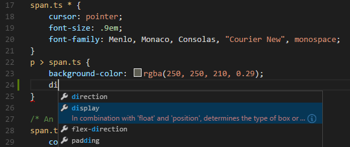
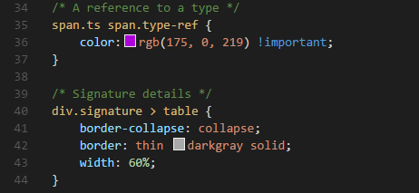
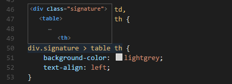

Visual Studio Codは、スタイルシートでCSS .css、 Sass .scss、 Less .lessによる編集を標準でサポートしています。拡張機能をインストールすることでより多くの機能性を得ることができます。
IntelliSense
セレクター、プロパティ、値のサポートをしています。⌃Space (Windows, Linux Ctrl+Space)を使用して、提案リストを表示してください。

Proposals contain extensive documentation, including a list of browsers that support the property. 選択項目でこれを確認するには⌃Space (Windows, Linux Ctrl+Space)を使用します。
Emmet
Tabを押すとEmmet略語を展開します。
Tip: 使用可能な略語については Emmet cheat sheet のCSSセクションを参照してください。
CSS Emmetを他の言語で使用したい場合は、Emeet構文プロファイル(html, cssなど)を emmet.syntaxProfiles 設定に関連付けることで可能です。その際の設定にはlanguage id を使用してください。
たとえば、JavaScript内でCSSのEmmet略語を使用するには、次のようにします:
|
またUser Defined Snippetsもサポートしています。
シンタックスとカラープレビュー
入力時に、構文の強調表示と色のプレビューを提供します。

Note:
.colorDecorators.enable設定でカラープレビュ－を無効化できます。
構文の検証とLint
現在のサポートバージョンは、CSS 2.1以上、Sass 3.2以上、Less 2.3以上です。
**注意: 各
.validateを変更することで検証を無効化できます。ユーザーまたはワークスペース設定で次のように無効化してください。
ファイル内のシンボルに移動
⇧⌘O (Windows, Linux Ctrl+Shift+O)を押してください。
ホバー
セレクターまたはプロパティにカーソルを合わせると、CSSルールに一致するHTMLスニペットを表示します。

定義に移動と全ての参照検索
これは、同一ファイル内でのSassとLessの変数をサポートしています。また、W3C 勧告案によるCSS変数もサポートしています。
Note: ファイル参照(‘imports’)等はサポートしていません。
SassとLess LessをCSSに変換
VS Codeはtask runnerを利用してSassとLessのTranspilerと統合できます。.scssか.lessを.cssに変換する際にこれを利用できます。これをシンプルなSass/Lessファイルで確認します。
Step 1: SassもしくはLessのTranspilerをインストール
このチュートリアルでは node-sassかlessのいずれかを使用してみましょう。
**注意：NPMのみインストール済みであれば、このチュートリアルを完了させるためにNode.jsもインストールする必要があります。インストール後は新しく開いた端末(コマンドプロント)から
npmが利用可能になります。
|
Step 2: 簡単なSassもしくはLessの作成
空のフォルダにstyles.scssかstyles.lessファイルを作成したら、VS Codeでそのフォルダーを開きます。ファイルに次のコードを追記します:
|
なおLessを利用する場合は、上記で$paddingを @paddingに変更してください。
Note: 今回の例は非常に簡単なものでした。ですから2つの書き方は似たものになりました。より高度な編集の場合、構文と構造は大きく異なるものになることに注意してください。
Step 3: tasks.jsonを作成
次の手順は、タスクを構成することです。セットアップには コマンドパレットを⇧⌘P (Windows, Linux Ctrl+Shift+P) で開いて Configure Task Runner を入力したら Enter で選択します。次に表示される選択ダイアログでOthersを選択してください。
これは、サンプルのtasks.jsonを.vscodeフォルダーに作成します。ファイルには、任意のコマンドを実行するサンプルが入っているので、これをLess/Sass用に設定を変更します:
|
|
VS codeはSass/LessファイルをCSSに変換するタスクであることと、外部タスクランナーがnode-sassかlesscであると解釈します。実行するコマンドはnode-sass styles.scss styles.cssかlessc styles.less styles.css`になります。
Step 4: ビルドタスクを実行
今回のファイル内で唯一のコマンドですから⇧⌘B (Windows, Linux Ctrl+Shift+B)(Run Build Task)を押すだけで実行できます。サンプルのSass/Lessファイルにはコンパイル上の問題はありません。ですからタスクを実行すれば、それに対応する styles.cssを作成します。
Note: もしビルドに失敗した場合や”An output directory must be specified when compiling a directory”といったエラーメッセージが表示された場合
tasks.jsonのファイル名がディスク上のファイル名と一致するようにしてください。コマンドラインからnode-sass styles.scss styles.cssでビルドテストができるはずです。
Sass/Lessの自動コンパイル
それでは、Sass/Lessコンパイルを自動化してみましょう。同じようにタスクを利用しますが、いくつかの変更を施します。
Step 1: Gulpとプラグインをインストール
Gulpを使用してコンパイルを自動化するタスクを作成します。また、gulp-sassプラグインを使用して少し作成を簡単にします。Lessの場合 gulp-lessを使用してください。
gulpはグローバル (-g)とローカル両方にインストールする必要があります:
|
Note:
gulp-sassとgulp-lessは、先ほど使ったnode-sassとlesscのGulplプラグインです。また、SassとLessプラグインは他にも多くあります。
インストールの成功をgulp -vと入力してテストできます。このコマンドを実行すればグローバル(CLI)とローカル両方のバージョンを表示するはずです。
Step 2: シンプルなGulp taskを作成
VS Codeを前と同じフォルダーで開き、ルートにgulpfile.jsを作成します。
gulpfile.jsファイルに次のコードを追記します:
|
|
ここで起こっていること
defaultのgulpタスクは、起動時にsassまたはlessのタスクを一度実行します。- ワークスペースルートのSass/Lessファイルの変更を監視します。
- 変更されたSass/Lessファイルをそれぞれのコンパイラ
gulp-sassやgulp-lessで実行します。 - 作成された各CSSファイルに、元のSass/Lessファイル名を付けます。その後これらのファイルを同じディレクトリーに配置します。
Step 3: tasks.jsonを実行し続けるように変更
VS Codeとタスクを完全に統合するには、作成したファイルをさらに変更する必要があります。isBackgroundをtrueに設定して、ファイルの変更をバックグラウンド処理しながらタスクを実行し続けるようにしてみましょう。
タスク構成を次のように変更します:
|
Step 4: ビルドタスクを実行
このタスクは isBuildCommandとマークされているので、⇧⌘B (Windows, Linux Ctrl+Shift+B) (Run Build Task)を押すだけで実行できます。 今回は編集したことでタスクは実行し続けます。他のLess/Sassファイルを作成および変更した場合でも、同じように動作します。また、自動保存 を有効にすると、より合理的なものにすることができます。
タスクを停止したい場合はコマンドパレット(⇧⌘P (Windows, Linux Ctrl+Shift+P))でTasks: Terminate Running Taskを実行してください。
CSS、Sass、Lessの設定
文法チェックはUser and Workspace Settingsで設定できます。
validateの設定を変更すると、標準の検証を無効化できます。別のLintを使用する場合これを設定してください。
| Id | Description | Default |
|---|---|---|
| css.validate | cssすべての検証を有効または無効にします | true |
| less.validate | lessすべての検証を有効または無効にします | true |
| scss.validate | sassすべての検証を有効または無効にします | true |
CSSのオプションを設定するには、idの接頭辞として css.lint.を使用してください。Sassであればscss.lint.といった具合です。
文法検証を有効にする場合はwarningまたはerrorに設定してください、ignoreを指定すると無効になります。文法検証は入力時実行します。
| Id | Description | Default |
|---|---|---|
| validate | すべての検証を有効または無効にします | true |
| compatibleVendorPrefixes | ベンダー固有のプレフィックスを使用する場合は、他のすべてのベンダー固有のプロパティも必ず含めてください | ignore |
| vendorPrefix | ベンダー固有のプレフィックスを使用する場合は、標準のプロパティも含めます | warning |
| duplicateProperties | 重複するスタイル定義を使用しないでください | ignore |
| emptyRules | 空の規則セットを使用しないでください | warning |
| importStatement | 複数の Import ステートメントを同時に読み込むことはできません | ignore |
| boxModel | パディングまたは枠線を使用する場合は幅または高さを使用しないでください | ignore |
| universalSelector | ユニバーサル セレクター (*) を使用すると処理速度が低下することが分かっています | ignore |
| zeroUnits | 0 の単位は必要ありません | ignore |
| fontFaceProperties | @font-face 規則で ‘src’ プロパティと ‘font-family’ プロパティを定義する必要があります | warning |
| hexColorLength | 16 進数の色には、3 つまたは 6 つの 16 進数が含まれる必要があります | error |
| argumentsInColorFunction | 正しくないパラメーターの数 | error |
| unknownProperties | 不明なプロパティ。 | warning |
| ieHack | IE ハックは、IE7 以前をサポートする場合にのみ必要です` | ignore |
| unknownVendorSpecificProperties | 不明なベンダー固有のプロパティ。 | ignore |
| propertyIgnoredDueToDisplay | Warn when using a property that is ignored due to the display. たとえば、’display: inline’ の場合、width、height、margin-top、margin-bottom、および float のプロパティには効果がありません | |
| important | !important は使用しないでください。これは CSS 全体の特定性が制御不能になり、リファクタリングが必要なことを示しています。 | ignore |
| float | ‘float’ は使用しないでください。float を使用すると、レイアウトの一部が変更されたときに CSS が破損しやすくなります。. | ignore |
| idSelector | セレクターには ID を含めないでください。これらの規則と HTML の結合が密接すぎます。 | ignore |
次のステップ
次を見てください:
- Configure Tasks - Dig into Tasks to help you transpile your Sass and Less to CSS.
- Basic Editing - Learn about the powerful VS Code editor.
- Code Navigation - Move quickly through your source code.
- HTML - CSS is just the start, HTML is also very well supported in VS Code.
よくある質問
Q: カラーピッカーを提供していますか?
A: いいえ提供していません。いいえ、しかしMarketplaceにはカラーピッカーをサポートする拡張機能があります。
Q: インデント構文のSass(.sass)シンタックスをサポートしますか ?
A: いいえ、しかしMarketplaceにはインデント構文のSassをサポートする拡張機能があります。